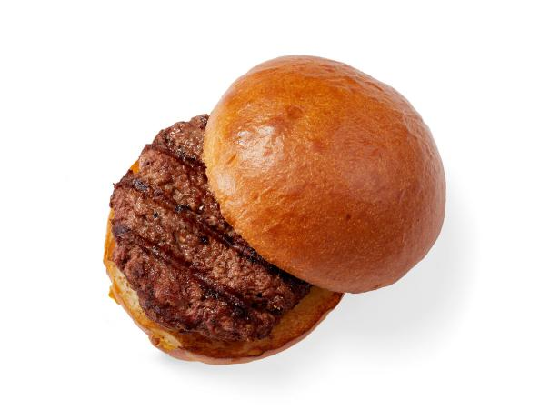

Basic Burger

Description
These burger patties are made with ground beef and an easy bread crumb mixture. Nothing beats a simple hamburger on a warm summer evening. Pile these burgers with your favorite condiments and pop open a cool drink!
Ingredients
-
1 large egg
-
1/2 tsp salt
-
1/2 tsp ground black pepper
-
1 lb ground beef
-
1/2 cup fine dry bread crumbs
Steps
-
Preheat an outdoor grill for high heat lightly oil grate.
-
Whisk together egg, salt, and pepper in a medium bowl.
-
Add ground beef and bread crumbs and mix with your hands or fork until well blended.
-
Form into four 3/4-inch-thick patties.
-
Place patties on the preheated grill. Cover and cook for 6 to 8 minutes per side, or to desired doneness. An instant-read thermometer inserted into the center should read at least 160 degrees F (70 degrees C).
-
Serve hot and enjoy!